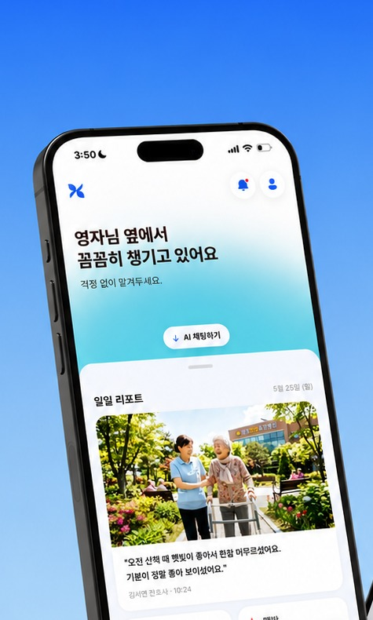
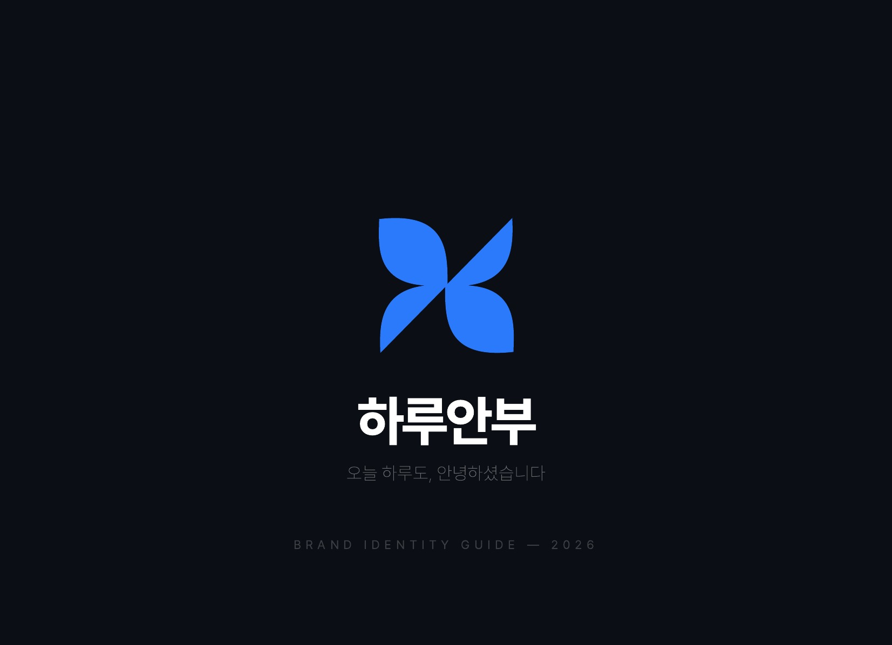
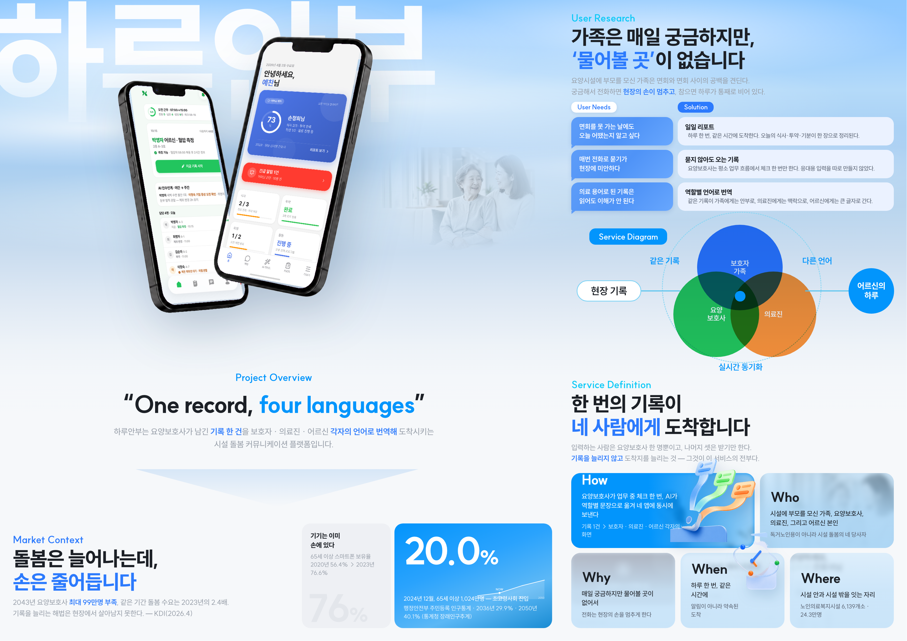
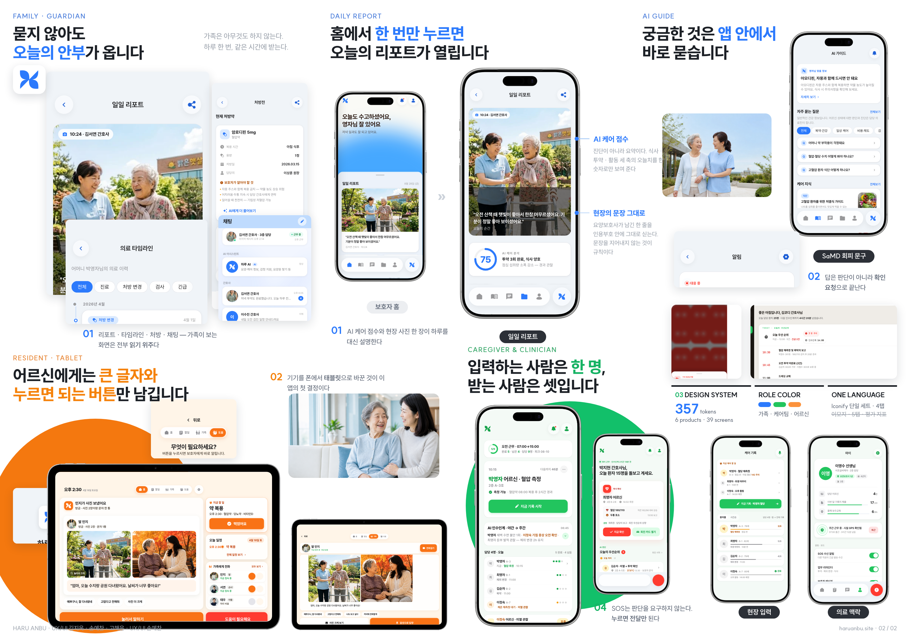
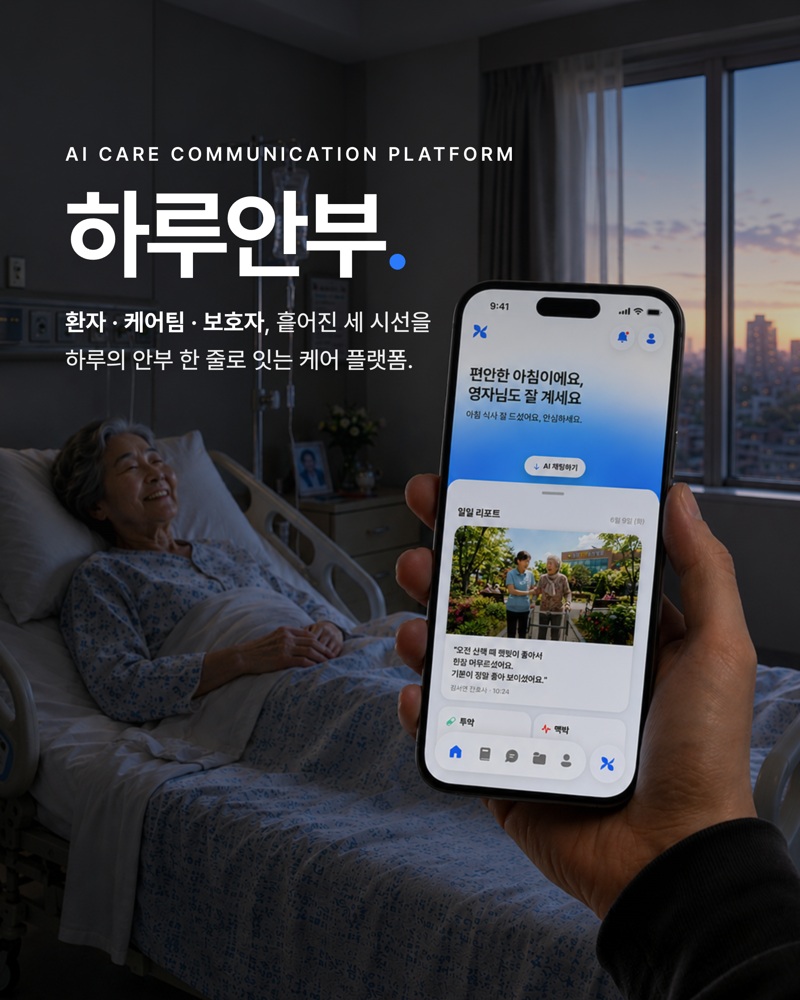

디자인 시스템
디자인 토큰 357개를 코드로 관리하고, 자동 검사로 전 화면의 일관성 · 접근성을 점검합니다.

현장 검증
KHF 2026(2026.8, 코엑스)에서 현업 종사자에게 직접 시연하고 피드백을 받았습니다.





목업 · 패널 · 카드뉴스 안의 앱 화면은 실제 구현 화면이며, 인물이 나오는 장면 사진은 AI 생성 이미지입니다. 현장 사진은 팀이 직접 찍었습니다.